1
Comparar com justiça
Uma única métrica (ROC-AUC) e os mesmos 5 folds estratificados para todos os modelos, buscas e curvas. O teste ficou trancado até o fim.
Continuação da APS1: com o mesmo split e o mesmo pipeline, comparamos um baseline, uma regressão logística regularizada e uma Random Forest, testamos uma mudança no pipeline, avaliamos o modelo final no teste e explicamos suas decisões com SHAP.
Resumo executivo
O modelo final é uma Random Forest sem a variável fnlwgt, avaliada uma única vez em 6.377 pessoas que nunca participaram do treino ou da seleção de hiperparâmetros.
Uma única métrica (ROC-AUC) e os mesmos 5 folds estratificados para todos os modelos, buscas e curvas. O teste ficou trancado até o fim.
Hipóteses da EDA viraram experimentos: a não linearidade da idade motivou as árvores e a irrelevância de fnlwgt motivou sua remoção.
Coeficientes, permutação e SHAP convergem nas variáveis centrais; a análise por grupo revela erros desiguais entre homens e mulheres.
Seção 1 · Métrica e validação
Só 24,1% das pessoas têm renda acima de US$ 50 mil. Um modelo que responde sempre <=50K acerta 75,9% sem aprender nada. O AUC mede outra coisa: a chance de, num par sorteado (uma pessoa de renda alta e uma de renda baixa), o modelo dar a nota maior para a de renda alta.
Validação cruzada, 5 folds
A acurácia parece boa; o AUC revela que o dummy é equivalente ao acaso.
StratifiedKFold(5, shuffle=True, random_state=42) em tudo, para comparar modelos fold a fold.Pipeline: imputação, escala e one-hot são reajustados em cada fold, sem vazamento.GridSearchCV para a logística e RandomizedSearchCV para a floresta, ambos otimizando ROC-AUC.Seção 1 · Modelos
A regressão logística regularizada chega a 0,884 sem sobreajuste, mas é limitada por viés. A Random Forest captura relações não lineares, como a da idade, e vence nos cinco folds.
| Modelo | Melhores hiperparâmetros | AUC treino | AUC validação |
|---|---|---|---|
| Dummy | strategy="prior" | 0,500 | 0,500 |
| Regressão logística | L2, C=1 (24 combinações, GridSearchCV) | 0,887 | 0,884 ± 0,005 |
| Random Forest | 200 árvores, min_samples_leaf=5, max_features=0.2, max_depth=20 (15 combinações, RandomizedSearchCV) | 0,928 | 0,890 ± 0,005 |
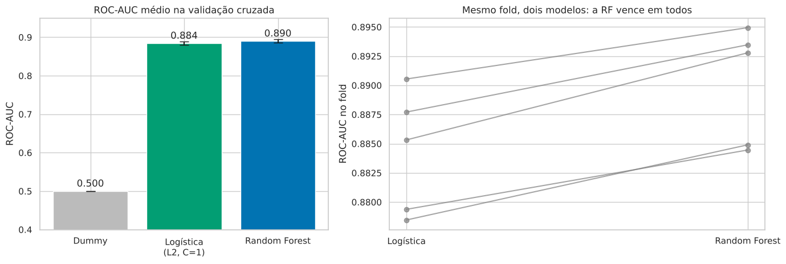
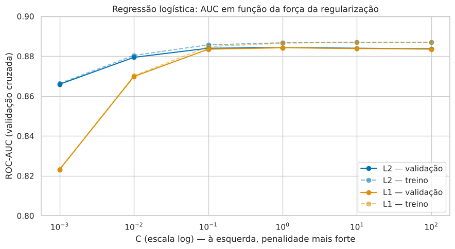
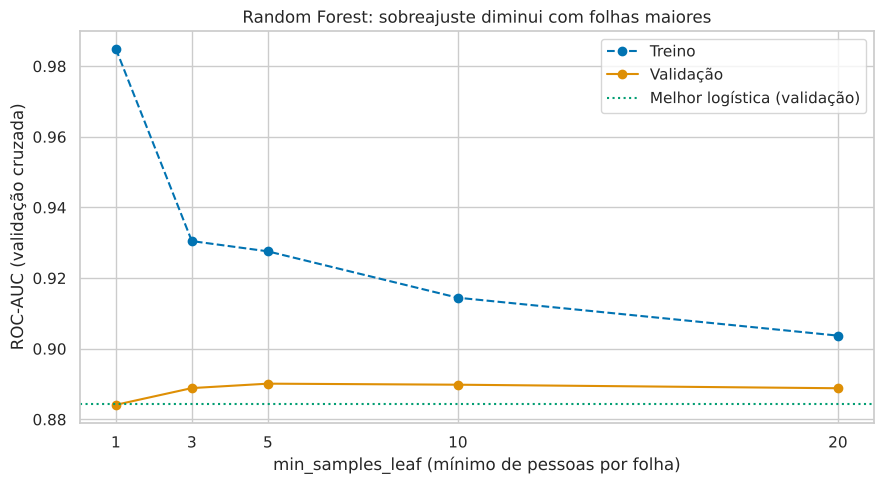
Seção 1 · Mudança no pipeline
fnlwgt: da hipótese ao testefnlwgt é o peso amostral do censo, não um atributo da pessoa, e na APS1 tinha distribuições iguais nas duas classes. A importância por impureza da floresta, porém, o colocava em 6º lugar.
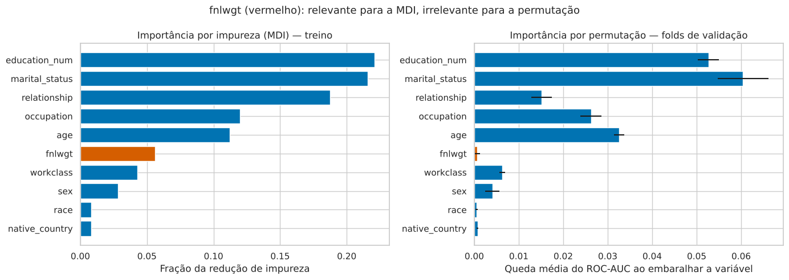
fnlwgt recebe 5,6% da importância; na permutação (validação), embaralhá-lo reduz o AUC em apenas 0,0007. Variáveis contínuas com muitos valores oferecem muitos cortes para ajustar ruído (Strobl et al., 2007).| Nova busca, mesmos folds | Com fnlwgt | Sem fnlwgt |
|---|---|---|
| AUC validação | 0,8901 | 0,8904 |
| AUC treino | 0,928 | 0,918 |
| Distância treino − validação | 0,038 | 0,028 |
| Colunas | 89 | 88 |
Fold a fold, a diferença é +0,0003 ± 0,0007: empate técnico. Com desempenho equivalente, o modelo sem fnlwgt é preferido por ter menos sobreajuste, uma coluna a menos e usar apenas atributos reais das pessoas, que existiriam também em produção.
fnlwgt, com os mesmos hiperparâmetros escolhidos pela nova busca.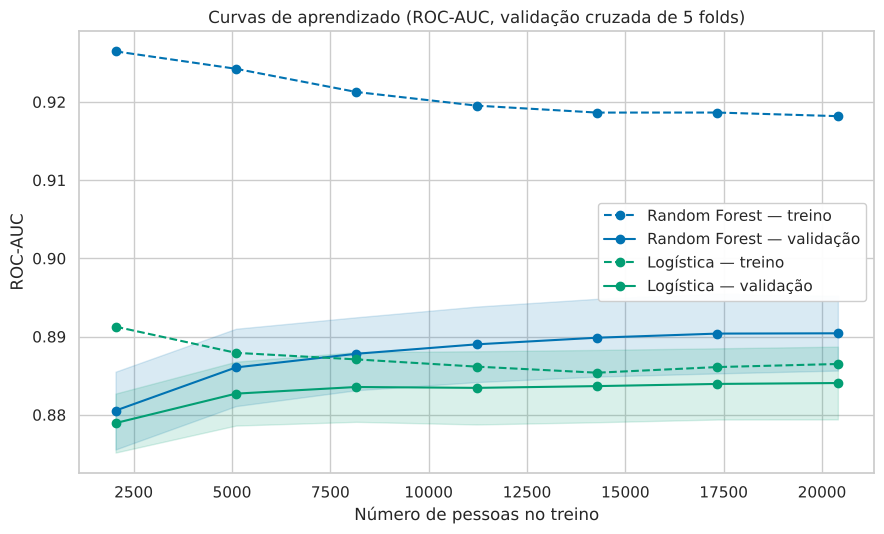
Seção 2 · Conjunto de teste
O limiar de decisão foi escolhido antes de abrir o teste, maximizando o F1 nas previsões de validação cruzada do treino. O resultado foi 0,35: com poucas pessoas de renda alta, o corte padrão de 0,5 deixa o modelo conservador demais.
| Métrica (teste) | Dummy | RF · limiar 0,50 | RF · limiar 0,35 |
|---|---|---|---|
| Acurácia | 0,759 | 0,836 | 0,815 |
| Precisão | — | 0,697 | 0,589 |
| Recall | 0,000 | 0,566 | 0,756 |
| F1 | 0,000 | 0,625 | 0,662 |
| Falsos positivos / falsos negativos | 0 / 1.535 | 377 / 666 | 808 / 375 |
| ROC-AUC | 0,500 | 0,884 (PR-AUC 0,702) | |
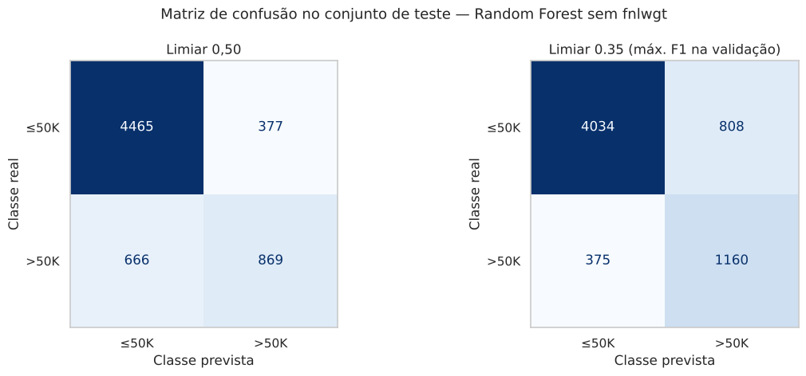
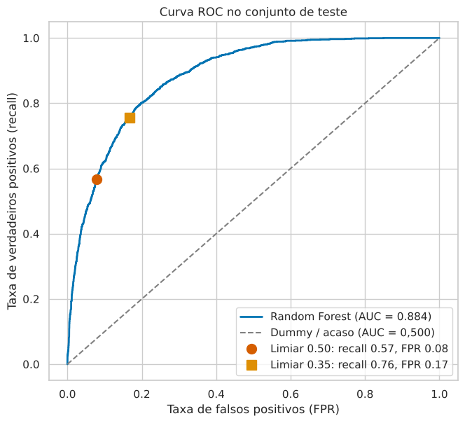
Seção 3 · Interpretação
Três lentes diferentes, que são os coeficientes da logística, a permutação na floresta e o SHAP, apontam para as mesmas variáveis centrais: estado civil, escolaridade e idade.
| Logística L1 · top 3 | Coef. | Razão de chances |
|---|---|---|
workclass = Missing | −1,71 | × 0,18 |
marital_status = Married-civ-spouse | +1,54 | × 4,6 |
relationship = Own-child | −1,12 | × 0,33 |
| Random Forest · top 3 (permutação) | Queda de AUC |
|---|---|
marital_status | 0,055 |
education_num | 0,053 |
age | 0,032 |
Na versão L2, native_country = Columbia aparece como o 2º maior coeficiente do modelo, sustentado por apenas 45 pessoas. A L1 zera essa coluna com o mesmo desempenho, e por isso é a versão interpretada.
relationship cai do 3º lugar na MDI para o 5º na permutação: Husband e Wife quase implicam Married-civ-spouse, então embaralhar uma ainda deixa a outra disponível.
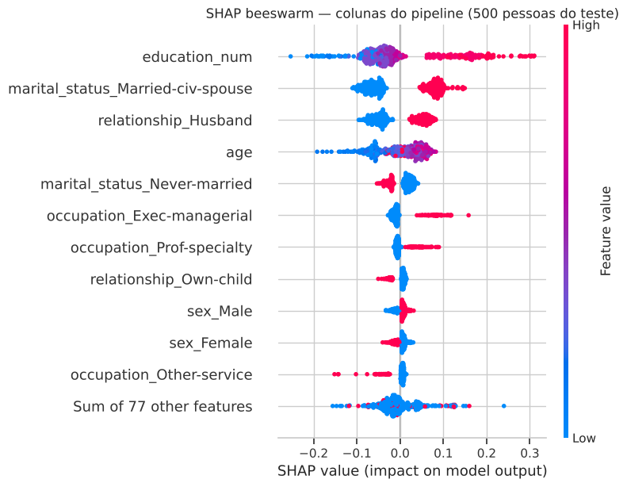
age, as cores se misturam: as idades intermediárias empurram tanto quanto as mais altas, a não linearidade vista na EDA.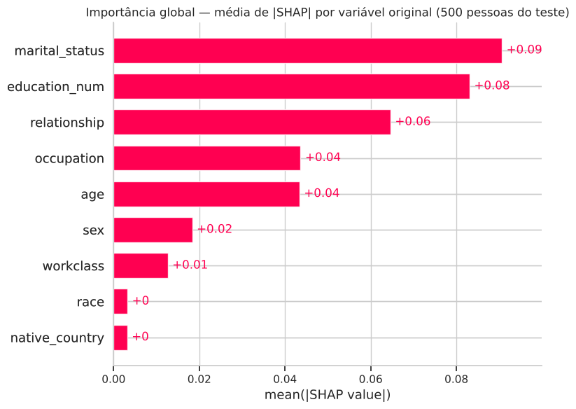
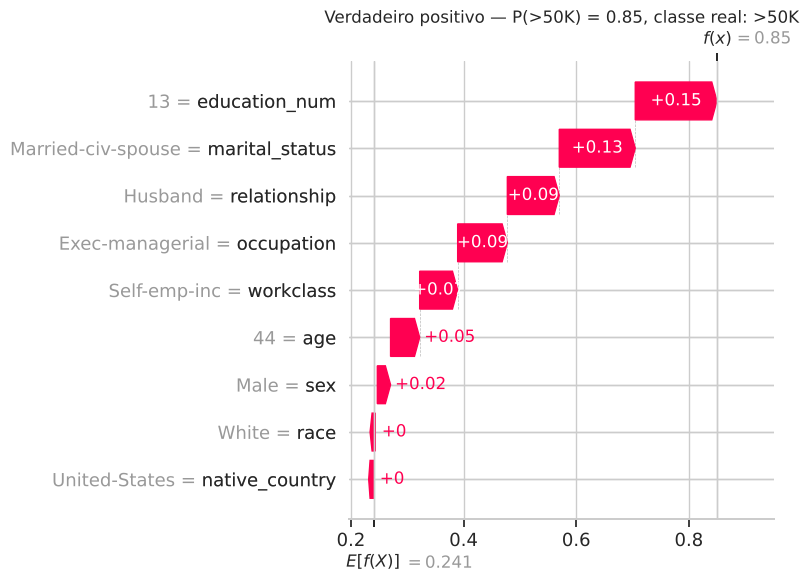
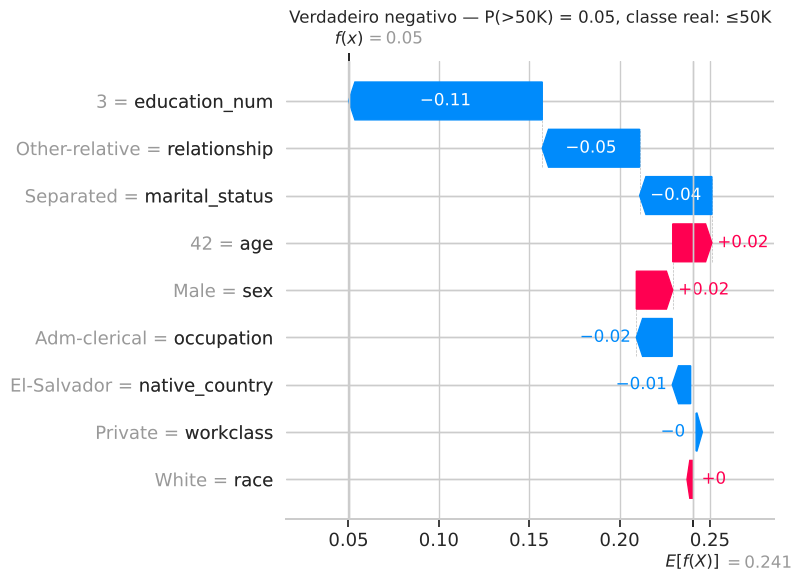
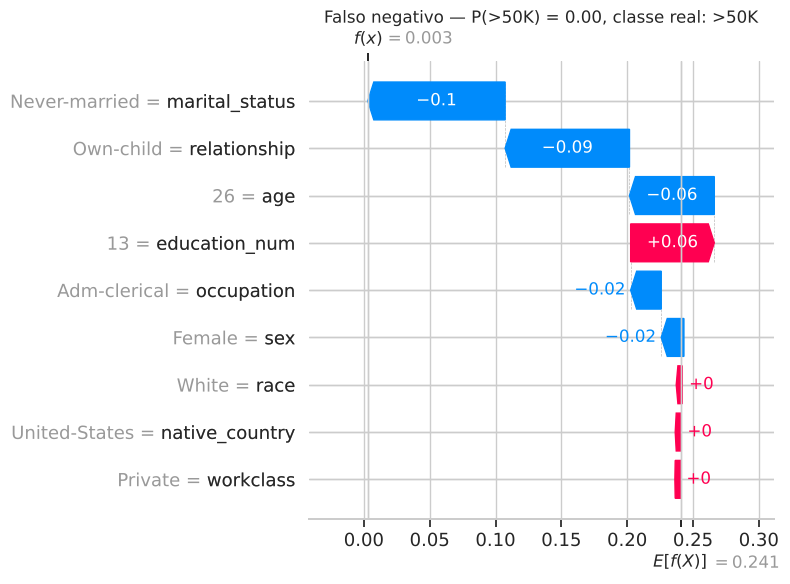
Seção 4 · Discussão crítica
Antes de discutir, medimos. As probabilidades estão bem calibradas (Brier 0,114 contra 0,183 do dummy), mas o desempenho por grupo revela uma desigualdade importante.
| Teste · limiar 0,35 | Mulheres | Homens |
|---|---|---|
| Renda alta reconhecida (recall) | 60% | 78% |
| Taxa de falsos positivos | 5% | 24% |
| Precisão | 60% | 59% |
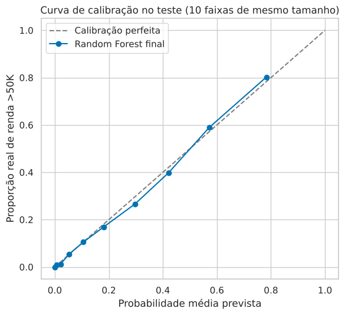
Uma mulher de renda alta tem bem menos chance de ser reconhecida do que um homem de renda alta, o que viola o critério de igualdade de oportunidade (Hardt, Price & Srebro, 2016).
Remover sex não resolveria: Husband/Wife codificam o sexo, e estado civil e situação familiar funcionam como atalhos de idade, gênero e momento de vida (Barocas, Hardt & Narayanan, 2023).
Censo de 1994 com limiar nominal: US$ 50 mil de 1994 valem mais que o dobro em dólares de hoje, e o mercado de trabalho mudou (Ding et al., 2021).
Esta versão não tem hours-per-week, capital-gain e capital-loss, presentes no Adult original (Becker & Kohavi, 1996). A curva de aprendizado confirma que o teto está nas features.
Pipeline completo com o limiar de 0,35 como um artefato versionado, documentado com usos pretendidos, usos proibidos e métricas por grupo (Mitchell et al., 2019).Referências